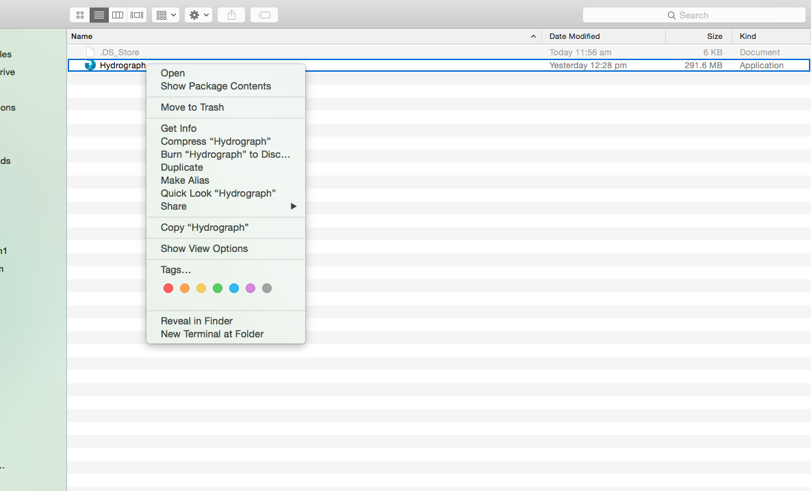
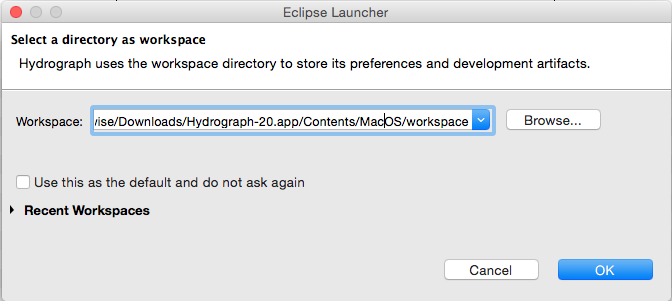
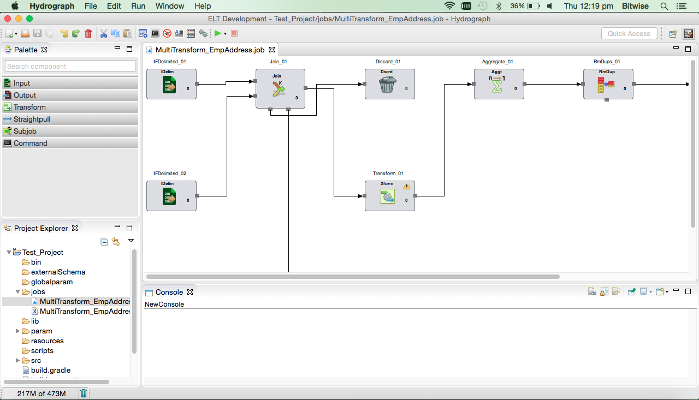

Hydrograph Help
Hydrograph Help
Launching Hydrograph on Macintosh
Hydrograph Release Version 1.0
Download the appropriate Hydrograph build from shared location. Right click on ELTTool.app -> show package contents

Go to Contents->MacOS

Open eclipse.ini file and change highlighted jdk version to respective 1.7.x version installed. For example below screenshot has jdk1.7.0_79.jdk but user system has jdk1.7.0_84.jdk version then same needs to be updated in eclipse.ini file of the product. This task needs to be performed each time when you are downloading new build of Hydrograph.

Run Hydrograph by double clicking on eclipse